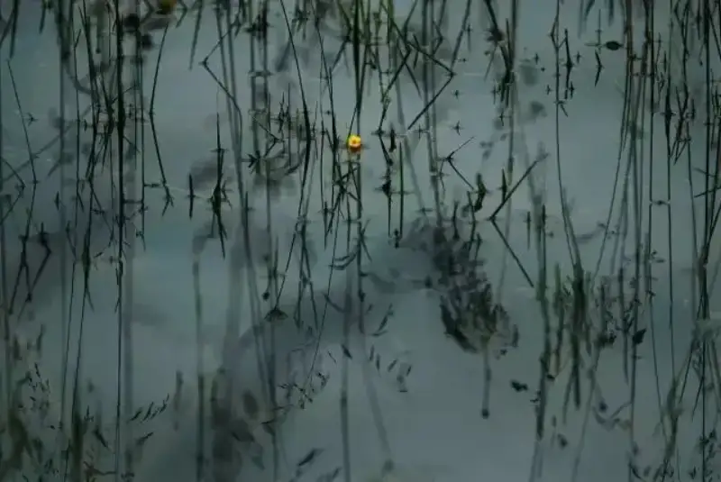
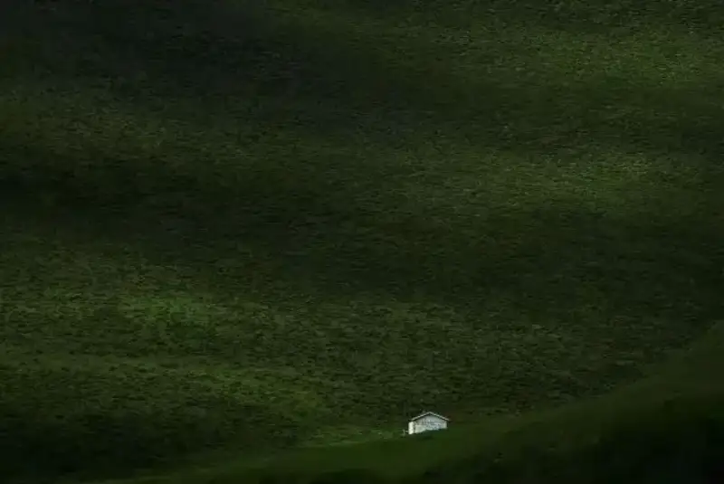
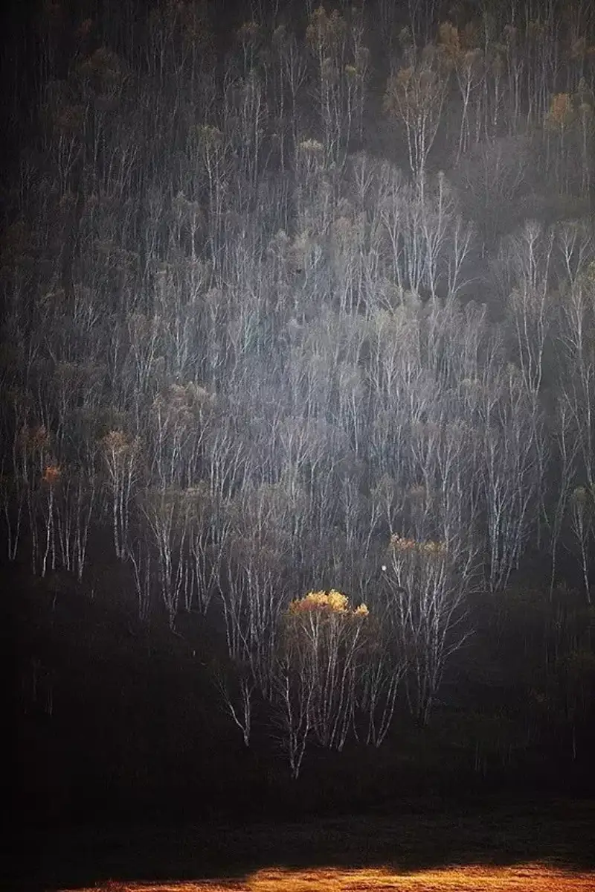
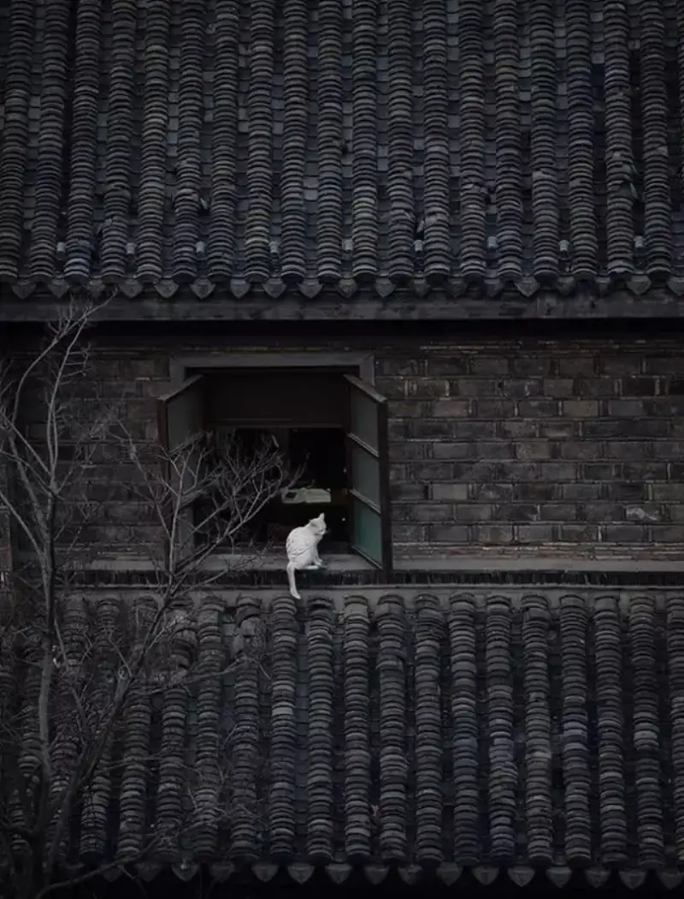
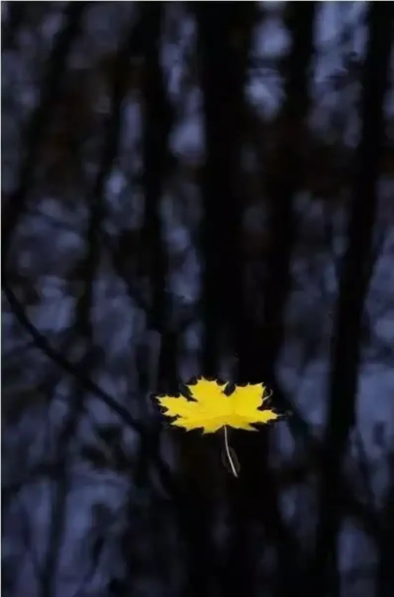
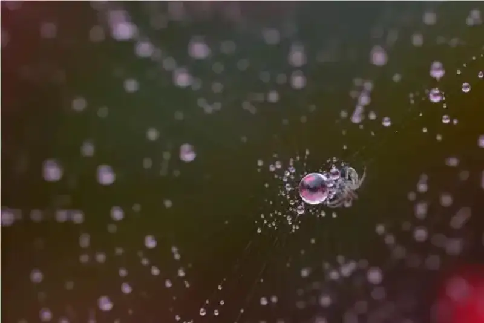

The photos that move you are often quiet at first, yet full of meaning. What strikes you in such a photo is a single point, like the decisive brushstroke in a painting.
Take this photo. Imagine what it would be like without the insect. This is what we call dot composition today.
What is dot composition?
Dot composition is a single visual point in the frame. This point is crucial. It does not have to be large, but it must catch the eye. Place it in the most important spot in the whole image, where it is essential.
If you remove the point, the whole image loses its center and its soul.

Dot composition fits many subjects. The point can be a waterbird set against a stretch of water.
It can be a fallen leaf against leaves and branches, a symbol of loneliness, hope, or freedom.
It can be a falling raindrop.
The heart of a dot-composition photo is the point. But a frame with only a point is not enough. It also needs light, color, and structure. The image below shows this.

The yellow flower in this image is the decisive touch. It catches the eye for two reasons.
1. Color and light:
The color of the flower is the opposite of the whole tone of the frame, and the yellow stands out.
2. Placement of the flower:
The flower sits at the upper third of the frame. It stands out visually and also gives the frame a calm, steady feel.
How do you use dot composition well?
1. Emphasize the contrast of size
To emphasize the contrast of size, choose a small subject and place it on the golden ratio point.

If the background is simple, use a large area of empty space. The result is often better.

By changing your focal length, you can also try a wide angle on small things, such as a tiny shoot breaking through the snow.
Shoot from a distance to show the grand scale of the surroundings.
2. Contrast of light and shadow
Use buildings, mountains, or clouds to block the light and create a narrow-beam effect. This concentrates the visual focus in one spot.

Choose a color that differs from the surroundings, so the subject has contrast in color and in light and shadow.
When the subject is small, dot composition can easily scatter attention. Then choose a special light, such as backlight to darken the surroundings and shoot only the silhouette of the cat.
3. Contrast of color
Handling color is hard for most people learning photography. It is not that hard. Use contrasting colors well, and you can shoot good frames.
For example, the contrast of red and green.
The contrast of yellow and green.
The contrast of white and black.

Color contrast and tension turn a dull frame into a lively one. When the subject leans warm and the background leans dark, the whole frame feels balanced.

4. Edge composition
When you choose a subject, you consider its form, color, and light and shadow, but placement matters just as much. We often think of the center, the diagonal, the golden ratio point, and the rule of thirds. Yet the one that catches the eye most is edge composition.
Upward edge composition places the subject at the edge of the frame.
Downward edge composition places the subject at the edge of the frame.
5. Contrast of real and blurred
Under backlight, use double exposure to emphasize the contrast of motion and stillness. First, drag the lens while you shoot a photo with a sense of motion. Then change your focal length and layer it over a still photo to get this effect.
Usually you focus on the person and blur the foreground. But when the foreground is blurred, the pine branches and snow blend into the surroundings, and the contrast of size is gone. Instead, blur the person into a silhouette. This keeps the contrast of size and adds a hazy beauty.
The most common trick for still life is a wide aperture. In telephoto wide-aperture mode, the frame usually becomes simple, but the subject can look plain. A few blurred foreground bokeh spots make a single-point composition even more lovely.
